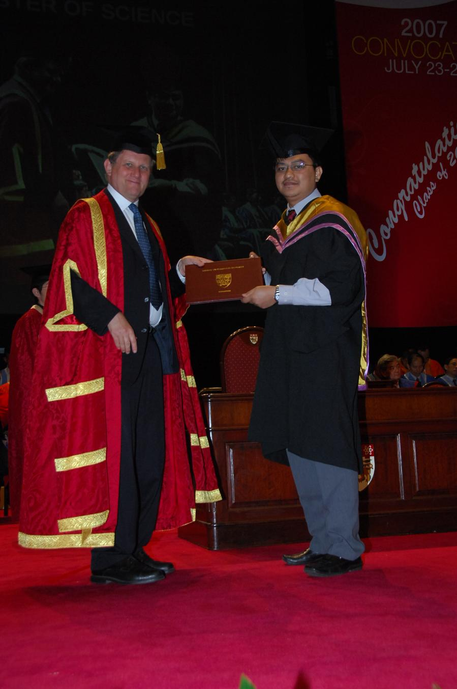
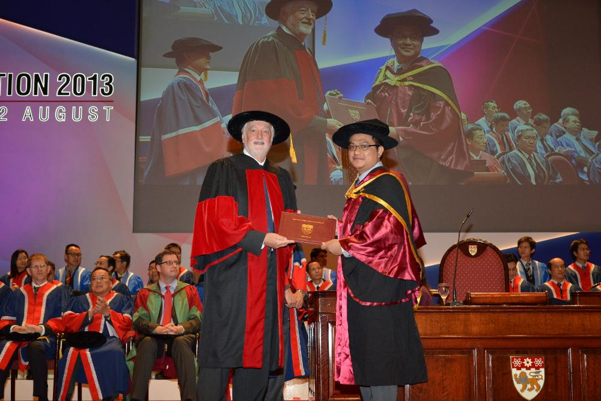

PROFILE

 Kushendarsyah Saptaji
Kushendarsyah Saptaji
+6281314893551
 syahsaptaji@gmail.com
syahsaptaji@gmail.com
Kushendarsyah Saptaji
Personal Details: 21st July 1977 • Bandung • Indonesia • Male • MarriedGenerals
- Dedicated and focused Mechanical Engineering Educator and Scholar with extensive experience in teaching engineering courses such as Manufacturing Processes, Additive Manufacturing, Engineering Materials, Computer Aided Engineering Design (CAED), Heat Transfer, Engineering Statics and Dynamics, Integrated Manufacturing System, and Plastic Product Design.
- Proficient and expert in additive manufacturing (3D and 4D printing), engineering design, conventional and advanced machining (micromachining), engineering materials, finite element analysis, and failure analysis. Becoming Principal Investigator for 8 research funds and CoInvestigator for 12 research funds, published 71 research articles, proceeding of international conferences and book chapter and serves as journal editor and invited reviewer of several international journals.
- Recognised for extensive experience in engineering consultation and service industry as well as promoting the philosophy of safety, quality, productivity, customer, and company to improve the success of production teams within engineering industry. Accomplished about 35 industrial projects related with failure analysis and some industrial projects related with manufacturing.
- Bilingual communicator with fluency in English and Bahasa Indonesia.
Education and Credentials
-
Doctor of Philosophy (PhD), School of Mechanical & Aerospace Engineering, Nanyang Technological University, Singapore, January 2008 - November 2012, Thesis: Study of Microcutting of Thin Workpieces.
-
Master of Science in Mechanics and Processing of Materials, School of Mechanical & Aerospace Engineering, Nanyang Technological University, Singapore, July 2006 - June 2007.
- Bachelors in Metallurgy Engineering (Cum Laude), Institute Technology of Bandung, Indonesia, July 1996 - October 2000.
Professional Membership
- Chartered Engineer (CEng), Institution of Mechanical Engineers (IMechE), January 2017 - now. IMechE Country Representative Indonesia, July 2020 - now.
- Insinyur Profesional Pratama (IPP), Persatuan Insinyur Indonesia, Mei 2020 - now.
Competence
- Certified International of Internal Quality Audit (CIIQA), March 2023 - now.
- Certified Occupational Safety and Health Officer at Laboratory, January 2024 - now.